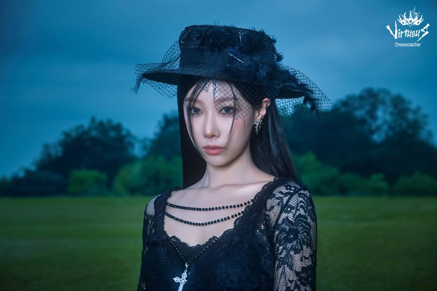

Handong

Han Dong (韓東), mais conhecida como Handong, nasceu no dia 26 de Março de 1996, em Wuhan - China, sendo a única integrante do grupo não-coreana.
Alguns fatos sobre a Handong:
- Ela é a sub-vocalista do grupo
- Gosta de comer chocolate, mas espirra quando come
- Se não fosse integrante do Dreamcatcher, seria comissária de bordo
- Foi trainee por 6 meses
- Seu apelido é DongDong, apelidada por Yoohyeon
Redes sociais da Handong: Instagram
Voltar